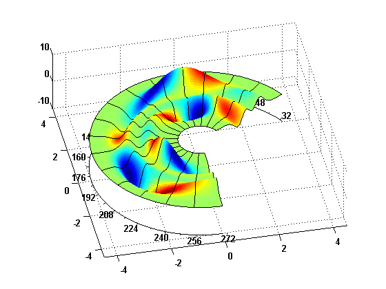
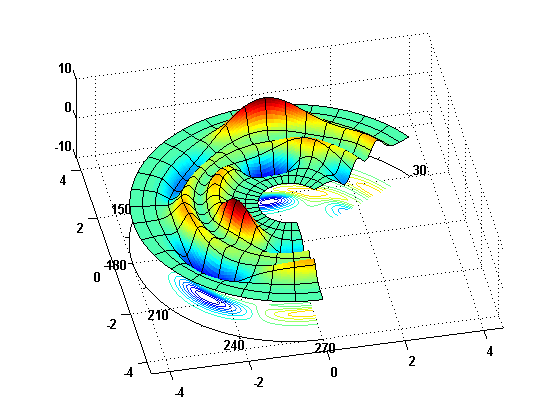
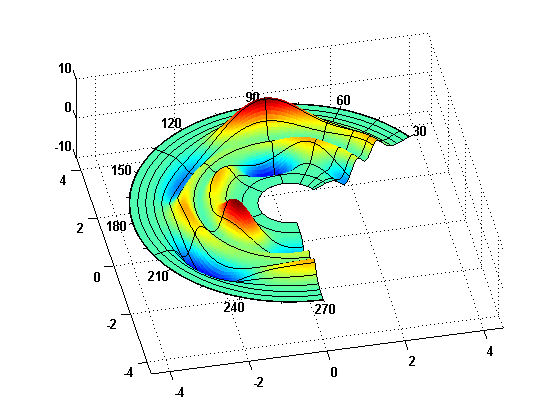
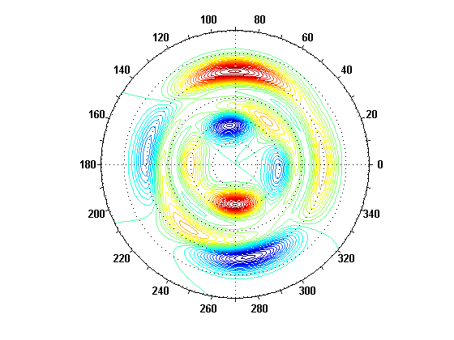

Contents
Test the polarplot3d function
[t,r] = meshgrid(linspace(0,2*pi,361),linspace(-4,4,101));
[x,y] = pol2cart(t,r);
P = peaks(x,y);
t1 = 2*pi;
t2 = [30 270]*pi/180;
r1 = 4;
r2 = [.8 4];
t3 = fliplr(t2);
r3 = fliplr(r2);
t4 = [30 35 45 60 90 135 200 270]*pi/180;
r4 = [0.8:0.4:2.8 3:0.2:4];
axprop = {'DataAspectRatio',[1 1 8],'View', [-12 38],...
'Xlim', [-4.5 4.5], 'Ylim', [-4.5 4.5],...
'XTick',[-4 -2 0 2 4], 'YTick',[-4 -2 0 2 4]};
Plot using default arguments
figure('color','white');
polarplot3d(P);
view([-18 76]);

Plot of an incomplete polar annulus, color is azimuthal gradient
figure('color','white');
polarplot3d(P,'plottype','surf','angularrange',t2,'radialrange',r2,...
'polargrid',{1 16},'tickspacing',8,'colordata',gradient(P),...
'plotprops',{'Linestyle','none'});
set(gca,axprop{:});

Surface plot with contours
figure('color','white');
polarplot3d(P,'plottype','surfcn','angularrange',t2,'radialrange',r2,...
'polargrid',{10 24},'tickspacing',15);
set(gca,axprop{:});

Surface plot with unequally spaced polar grid lines
figure('color','white');
polarplot3d(P,'plottype','surfn','radialrange',[min(r4) max(r4)],...
'angularrange',[min(t4) max(t4)],'polargrid',{r4 t4},'tickspacing',15);
set(gca,axprop{:});

Surface plot, compass convention, color is radial direction gradient
figure('color','white');
polarplot3d(P,'plottype','surfn','angularrange',t2,...
'radialrange',r2,'tickspacing',15,...
'polardirection','cw','colordata',gradient(P.').');
set(gca,axprop{:});

Mesh plot with polar axis at mean value, reversed angular sense
figure('color','white');
polarplot3d(P,'plottype','mesh','angularrange',t3,'radialrange',r2,...
'meshscale',2,'polargrid',{1 1},'axislocation','mean');
set(gca,axprop{:});

Mesh plot with polar axis along edge of surface
figure('color','white');
polarplot3d(P,'plottype','mesh','angularrange',t2,'radialrange',r2,...
'polargrid',{10 24},'tickspacing',8,...
'plotprops',{'Linestyle','none'});
set(gca,axprop{:});

Mesh plot with contours, overlay 8 by 8 polar grid
figure('color','white');
polarplot3d(P,'plottype','meshc','angularrange',t2,'radialrange',r3,...
'meshscale',2,'polargrid',{8 8});
set(gca,axprop{:});

Wireframe plot
figure('color','white');
polarplot3d(P,'plottype','wire','angularrange',t2,'radialrange',r2,...
'polargrid',{12 24});
set(gca,axprop{:});

Surface and contour plot, reversed radial sense
cl = round(min(P(:))-1):0.4:round(max(P(:))+1);
figure('color','white');
polarplot3d(P,'plottype','contour','polargrid',{6 4},'contourlines',cl);
set(gca,'dataaspectratio',[1 1 1],'view',[0 90]);
